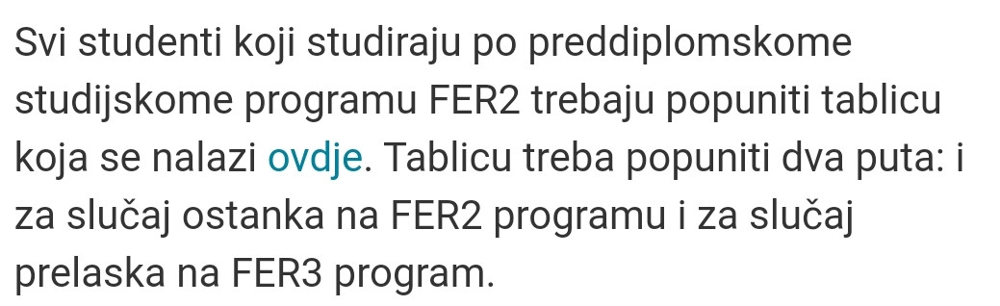
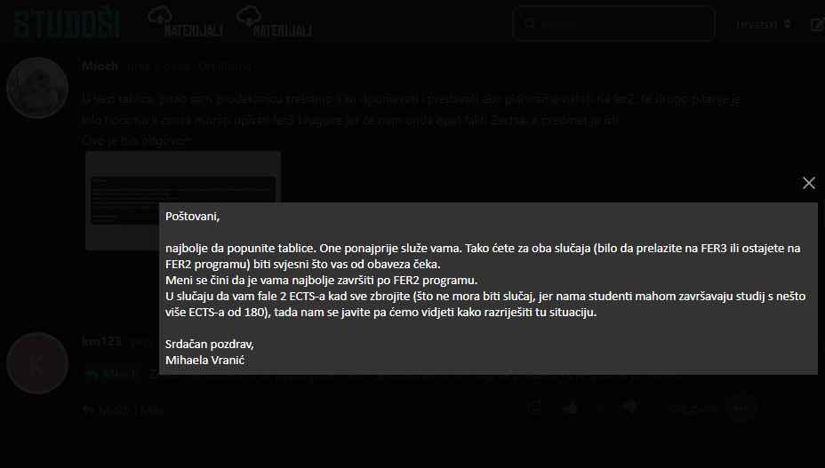

Rekla je samo da pratim obavijesti…nije baš nešto pretjerano rječita bila hahaha
Klembuksna uuu, daj Bože da nam se smiluju
tux Evo provjereno svjeze jos jednom kod Bascha, FER2 ARH1 i FER3 ARH1E su ekvivalenti i dalje, ako drugacije pise Studentska je zeznula.
debil Jedan kolega je poslao mail prodekanici za nastavu za savjet. Probaj i ti objasnit svoju situaciju pa će ti valjda odgovorit. Piše da se predmeti 2. godine FER2 više neće održavati ove godine ali čuo sam da neki ostaju na FER2 iako imaju nepoložene predmete 2. godine, tako da više ne znam ništa lol.
Meni je prodekanica rekla da će se Fiz2 normalno predavati i iduće godine tkd msm da ima nade za izbjegavanje FER3 programa..
Angela Martin Hoće li onda s ponedjeljka ukloniti ono upozorenje s aplikacije za upise?
Je li opp i programsko inzenjerstvo ove godine isti predmet ili ce se odrzavati odvojeno?
monte Trebalo bi biti apsolutno isto, sumnjam da će se držati odvojeno jer i ovako je bilo problema s predavanjima, nije bilo dovoljno predavača, a grupe su bile ogromne.
M̵̧̩͑̀͝î̶͍̉ć̴̝̾́̀o̶̺̟̣͂̽ pitam jer meni u aplikaciji za upis kaze da nosi 8 ects(fer2),a programsko inzenjerstvo po fer3 nosi 5 ects.
monte Pojmom ECTS-a si možeš obrisati guzicu ak ti ne trebaju za dom, nebitan pojam, bar na FERu, tu je samo bolonje radi
Umarell Nije mi spominjala, ali vjerujem da hoće
Angela Martin evo vidim da je u kalendaru stavljena Fizika2 pa se nadam da je onda to to
ja sam na mail ko i svi vjerovatno (mail 7.9 ) dobio da moram popuniti neku tablicu a nigdje da nađem tu tablicu ?!
deus_vult https://www.fer.unizg.hr/_news/94290/Tablica%20za%20studente%20-%20FER2%20-FER3.xlsx
Trebaju li se te tablice predavati ako se ne mislimo prebacivati na fer3? Od studentske nisam dobila nikakav odgovor.
MA Prema onome kaj piše u obavijesti, trebamo.
GranAutismo MA Bobinator po mailu koji sam neki dan stavio, a kolega @Bobinator linkao, mislim da mi koji ostajemo na fer2 netrebamo to predavati, jer bi onda (vjerujem) u mailu napisala do kada i gdje treba predati, s obzirom da sam i to pitao (u obavijesti je naglaseno da se ono za predaju odnosi na ekipu koja se prebacuje)
MA Bobinator Mioch Na ovo sam mislio:  Sad ak se oni žele jebat s papirima nek samo daju, predat ću im.
GranAutismo molim te citiraj mi dio u kojem pise da se mora predat u slicaju ostanka na FER2 edit: sad sam tek nasao sto sam trazio 
GranAutismo ne pitam za popunjavanje, nego za predaju. jer je ispod jasno navedeno do kad i gdje se treba predat za one koje prelaze, ja sve to tumacim tako da tko ostaje na fer2 i ne treba upisivat/ispisivat predmete ne mora nista
GranAutismo Bobinator a da jos netko posalje mail prodekanici pa da potvrdimo?